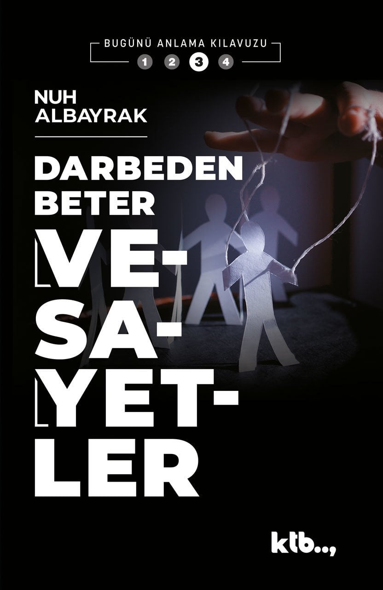

Gerçekler Geçidi
Trablusgarp ve Selanik Nasıl Kaybedildi?
Nuh Albayrak, Gerçekler Geçidi programında İttihat ve Terakki'nin yönetimi ele geçirmesinden sonra yaşananları ve Sultan İkinci Abdülhamid sonrasındaki gelişmeleri kronolojik olarak anlatıyor.
Nuh Albayrak · 18:01 ·
Otomatik altyazıdan; hatalar olabilir.
Açıklama
İttihat ve Terakki Osmanlı yönetimini ele geçirdikten sonra ne oldu?
Nuh Albayrak, Gerçekler Geçidi programının bu bölümünde Sultan İkinci Abdülhamid sonrasında yaşanan gelişmeleri kronolojik olarak anlatıyor.
İttihat ve Terakki kadrolarının Osmanlı Devleti’ni yeniden güçlendirme iddiasıyla yönetime geldiğini hatırlatan Nuh Albayrak, uygulanan politikaların sonuçlarını Arnavutluk, Balkanlar, Trablusgarp ve Selanik üzerinden değerlendiriyor.
Programda Arnavutluk’taki gelişmeler, Kiliseler Kanunu, Balkan devletlerinin yakınlaşması ve Osmanlı’nın Balkanlardaki güç kaybı ele alınıyor.
Bölümün dikkat çekici kısımlarından biri Trablusgarp meselesi.
Nuh Albayrak, İtalya’nın saldırısından önce bölgedeki silahların toplatılması ve kıyıdaki birliklerin iç bölgelere çekilmesi kararlarını sorguluyor.
Ardından Sadrazam İbrahim Hakkı Paşa’ya İtalya’nın gönderdiği notalar ve Trablusgarp’ın işgali anlatılıyor.
Programın son bölümünde ise Selanik’teki harp mühimmatının Yunan saldırısından hemen önce İstanbul’a gönderilmesi ve şehrin teslim edilmesi üzerinde duruluyor.
Gerçekler Geçidi, Nuh Albayrak’ın anlatımıyla Seyf TV’de.
00:16 Giriş
00:26 İttihat ve Terakki Yönetimi Ele Geçiriyor
00:45 İttihatçıların İktidar İddiası
01:08 Avrupa’da Eğitim Gören Kadrolar
01:30 Osmanlı’yı Yeniden Güçlendirme Vaadi
02:20 Yönetimi Ele Geçirdikten Sonra Ne Oldu?
02:39 İlk Düğme Nerede Yanlış İliklendi?
03:03 İttihat ve Terakki’nin Kuruluş Süreci
03:22 Emanuel Karasu ve Selanik
04:17 İttihat ve Terakki’nin En Büyük Hatası
05:34 Alınan Desteğin Bedeli
05:59 Selanik ve Manastır
06:22 Arnavutluk’taki Karışıklıklar
06:39 Arnavutlara Yönelik Politikalar
07:16 Kiliseler Kanunu
07:23 Sultan İkinci Abdülhamid’in Balkan Politikası
07:35 Balkanlarda Diplomasi Dengesi
08:28 Kiliseler Kanunu Ne Değiştirdi?
09:28 Balkan Devletlerinin Yakınlaşması
09:43 1908’de Yaşanan Toprak Kayıpları
10:00 Trablusgarp Meselesi
10:42 Libya’nın Stratejik Önemi
11:28 Trablusgarp’taki Silahlar Neden Toplatıldı?
12:29 Sahildeki Kuvvetler Neden Geri Çekildi?
12:46 İtalya Saldırıya Geçiyor
13:04 Sadrazam İbrahim Hakkı Paşa
13:33 İtalya’dan Gelen İlk Nota
13:54 Nota İbrahim Hakkı Paşa’ya Nerede Ulaştı?
14:31 Nota Neden Açılmadı?
14:54 İtalya’dan İkinci Nota
15:13 24 Saatlik Ültimatom
15:22 İbrahim Hakkı Paşa Durumu Fark Ediyor
15:31 “Benim Durumuma Düşen Sadrazamların Boynu Vurulurdu”
15:49 İbrahim Hakkı Paşa İstifa Ediyor
15:56 Trablusgarp’ın İşgali
16:05 Selanik’te Benzer Süreç
16:21 Yunan Saldırısından Üç Gün Önce
16:28 Selanik’teki Mühimmatın İstanbul’a Gönderilmesi
16:44 Selanik’in Teslimi
16:53 Sultan İkinci Abdülhamid İstanbul’a Getiriliyor
17:15 Sonraki Bölüm: Edirne ve Bulgaristan
17:32 Seyf TV Çağrısı
17:43 Kapanış
📚 Kitapları Almak İçin :https://www.ktbkitap.com/

Hocanın kitapları


Darbeden Beter Vesayetler
Satın al

İşgale Benzer Hıyanetler
Satın al

Devlet Yıkan Tefrikalar
Satın al
Aynı programdan

Gerçekler Geçidi
Sultan Reşad Neden Devlete Müdahale Edemedi?
Nuh Albayrak 12:54

Gerçekler Geçidi
Meşrutiyet Osmanlı’yı Güçlendirdi mi, Yıkıma mı Götürdü?
Nuh Albayrak 19:57

Gerçekler Geçidi
Abdülhamid Han'ın Oğlu Fransa'da Açlıktan Öldü
Nuh Albayrak 18:34

Gerçekler Geçidi
Abdülhamid Han’ın Son Arzusunu Neden Reddettiler?
Nuh Albayrak 14:21

Gerçekler Geçidi
31 Mart Vakası Gerçekten Bir İsyan mıydı?
Nuh Albayrak 26:05

Gerçekler Geçidi
31 Mart’a Giden Yol Nasıl Açıldı?
Nuh Albayrak 30:55

Gerçekler Geçidi
Abdülhamid Han Meclisi Neden Kapattı?
Nuh Albayrak 29:31

Gerçekler Geçidi
Sultan Abdülaziz Neden Katledildi?
Nuh Albayrak 21:59